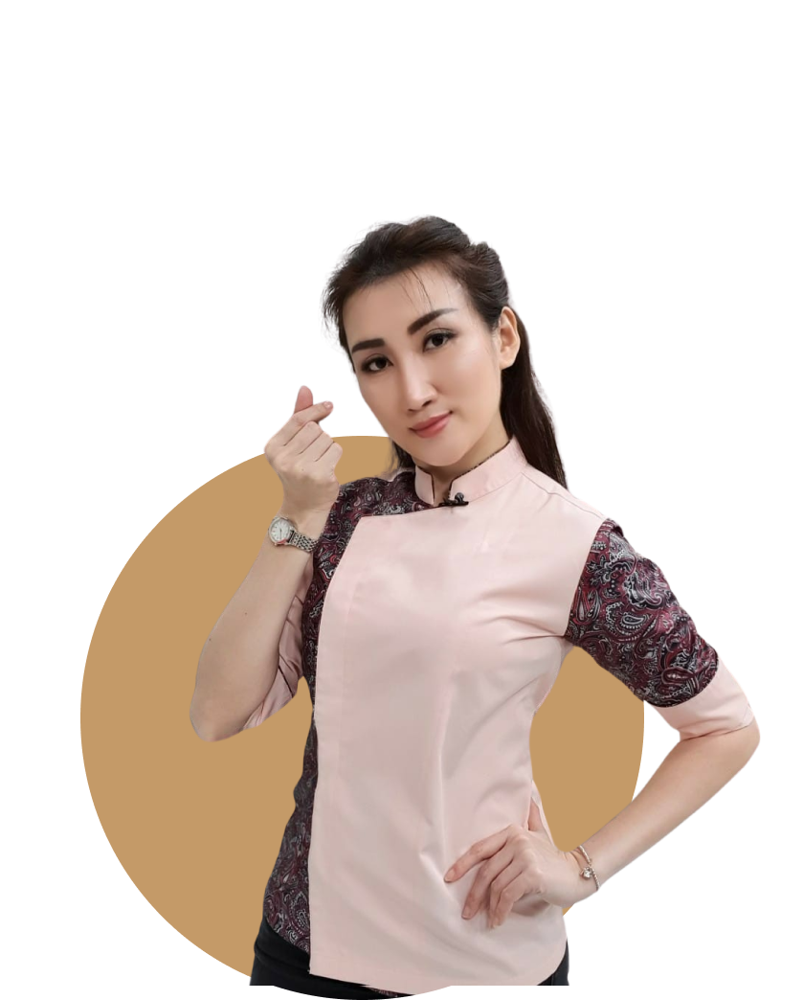

<section class="body-font">
<<<<<<< Updated upstream
  <div class="container mx-auto flex px-5 pt-12 pb-24 md:flex-row flex-col items-center">
    <div class="lg:flex-grow md:w-1/2 lg:pr-24 md:pr-16 flex flex-col md:items-start md:text-left mb-16 md:mb-0 items-center text-center">
      <h1 class="title-font sm:text-6xl text-3xl mb-4 font-medium text-white font-Bli">Our Master Chef
      </h1>
      <p class="mb-8 leading-relaxed text-white">Led by Co-Founder & Executive Chef Axhiang Leeyan, a renowned chef who graduated from MasterChef Indonesia Season 4. Chef Axhiang's expertise honed through various collaborations with the Indonesia Chef Association and his dedication in serving VIP guests, guarantees exquisite dishes that pamper your taste buds.
      </p>
      <div class="flex justify-center gap-5">
        <a class="btn-menu" href="/home/menu">Menu</a>
        <a class="btn-book" href="/home/reservation/#reserv">Book Table</a>
=======
    <div class="container mx-auto flex px-5 py-24 md:flex-row flex-col items-center">
      <div class="lg:flex-grow md:w-1/2 lg:pr-24 md:pr-16 flex flex-col md:items-start md:text-left mb-16 md:mb-0 items-center text-center">
        <h1 class="title-font sm:text-6xl text-3xl mb-4 font-medium text-white" style="font-family: 'Roboto Slab', serif; font-weight: bold;">Our Master Chef
        </h1>
        <p class="mb-8 leading-relaxed text-white">Led by Co-Founder & Executive Chef Axhiang Leeyan, a renowned chef who graduated from MasterChef Indonesia Season 4. Chef Axhiang's expertise honed through various collaborations with the Indonesia Chef Association and his dedication in serving VIP guests, guarantees exquisite dishes that pamper your taste buds.
        </p>
        <div class="flex justify-center gap-5">
          <button class="btn-menu">Menu</button>
          <button class="btn-book">Book Table</button>
        </div>
      </div>
      <div class="lg:max-w-lg lg:w-full md:w-1/2 w-5/6 relative">
        
        
>>>>>>> Stashed changes
      </div>
    </div>
    <div class="lg:max-w-lg lg:w-full md:w-1/2 w-5/6 ">
      
      
    </div>
  </div>
</section>